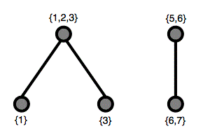

Project Euler 553
Project Euler 553
题目
Power sets of power sets
Let \(P(n)\) be the set of the first \(n\) positive integers \(\{1, 2, \dots, n\}\).
Let \(Q(n)\) be the set of all the non-empty subsets of \(P(n)\).
Let \(R(n)\) be the set of all the non-empty subsets of \(Q(n)\).
An element \(X\in R(n)\) is a non-empty subset of \(Q(n)\), so it is itself a set.
From \(X\) we can construct a graph as follows:
Each element \(Y\in X\) corresponds to a vertex and labeled with \(Y\);
Two vertices \(Y_1\) and \(Y_2\) are connected if \(Y_1\cap Y_2\neq\varnothing\).
For example, \(X=\{ \{1\},\{1,2,3\},\{3\},\{5,6\},\{6,7\} \}\) results in the following graph:

This graph has two connected components.
Let \(C(n,k)\) be the number of elements of \(R(n)\) that have exactly \(k\) connected components in their graph.
You are given \(C(2,1)=6, C(3,1)=111, C(4,2)=486, C(100,10)\bmod1000000007=728209718\).
Find \(C(10^4,10)\bmod1000000007\).
解决方案
为简化叙述，先把“空边集”也一并计入（等价于把 \(k=0\) 的情形补齐为 \(C(n,0)=1\)），这样生成函数形式更整洁；题目所求为 \(k\ge1\)，结果不受这一补充影响。定义\(T(n)=2^{2^n-1},\)因为 \(P(n)\) 的非空子集共有 \(2^n-1\) 个，每个都可以选择“取/不取”。定义指数型生成函数（EGF）：\(\displaystyle f(x)=\sum_{n\ge0}\frac{T(n)}{n!}x^n.\)
记 \(q_n\) 为：在 \(P(n)\) 上选出一批非空子集，使得 \(P(n)\) 的每个元素都至少在其中一个被选子集中出现一次（即被覆盖）的方案数。其 EGF 记为\(\displaystyle q(x)=\sum_{n\ge0}\frac{q_n}{n!}x^n.\)
任取一个边集方案 \(X\)（从所有非空子集中挑一些），把 \(P(n)\) 按“是否出现在任何被选子集里”划分为两块：从未出现的元素集合 \(U\)，以及其余被覆盖到的元素集合 \(S=P(n)\setminus U\)。这个分解对每个 \(X\) 都是唯一的：在 \(S\) 上，\(X\) 的限制恰好构成一个“全覆盖方案”；而在 \(U\) 上没有任何附加结构，仅仅是一个普通的标号集合。由此，总方案的 EGF 分解为“普通标号集合”的 EGF \(e^x\) 与“全覆盖方案”的 EGF \(q(x)\) 的乘积，即\(f(x)=e^x q(x),q(x)=f(x)e^{-x}.\)
设 \(\kappa_n\) 为：在 \(P(n)\) 上全覆盖且其交图连通的方案数，EGF 为\(\displaystyle\kappa(x)=\sum_{n\ge1}\frac{\kappa_n}{n!}x^n.\)
任意一个全覆盖方案都会诱导出若干个连通分量：同一分量内的子集可通过“交集非空”的链相互到达，而不同分量之间不可能共享底层元素，因此这些分量对应的底层元素集合两两不交。于是，一个全覆盖方案可以唯一表示为若干个“连通全覆盖方案”的集合（无序并集）。在 EGF 语言下，这等价于\(q(x)=\exp(\kappa(x)),\)从而\(\kappa(x)=\log q(x).\)
进一步地，任意一个方案 \(X\in R(n)\) 的交图也会分成若干连通分量：每个分量对应一个连通块，不同连通块同样不会共享底层元素，因此它们对应的是若干个互不相交的“连通块”。若交图恰有 \(k\) 个连通分量，则被使用到的底层元素由这 \(k\) 个连通块贡献，而未被任何子集覆盖的元素完全“游离”，只贡献一个普通标号集合因子，对应 EGF 为 \(e^x\)。由于这 \(k\) 个连通块在标号意义下是无序的，取 \(k\) 个连通块的 EGF 贡献为 \(\kappa(x)^k/k!\)，因此
\[ \mathcal C_k(x):=\sum_{n\ge0}\frac{C(n,k)}{n!}x^n =e^x\frac{\kappa(x)^k}{k!}, \]
并且系数关系为\(C(n,k)=n![x^n]\mathcal C_k(x).\)
为了避免直接进行对数操作，我们先求导：\(\kappa'(x)=\dfrac{q'(x)}{q(x)}.\)又 \(q(x)=f(x)e^{-x}\)，所以\(q'(x)=e^{-x}(f'(x)-f(x)),\)从而\(\kappa'(x)=\dfrac{f'(x)-f(x)}{f(x)}.\)
定义\(\displaystyle g(x)=f'(x)-f(x)=\sum_{n\ge0}\frac{T(n+1)-T(n)}{n!}x^n,h(x)=\frac{g(x)}{f(x)}=\kappa'(x).\)
设\(V_k(x)=\frac{\kappa(x)^k}{k!}\)，那么\(\mathcal C_k(x)=e^xV_k(x).\)则\(V_k'(x)=\kappa'(x)\dfrac{\kappa(x)^{k-1}}{(k-1)!}=h(x)V_{k-1}(x),\)因此令\(D_k(x)=h(x)\mathcal C_{k-1}(x)=e^xV_k'(x).\)
记 EGF 系数对应的原始系数为\(c_k(n)=n![x^n]\mathcal C_k(x), d_k(n)=n![x^n]D_k(x).\)由 \(D_k(x)=e^xV_k'(x)\), \(\mathcal C_k(x)=e^xV_k(x)\) 可写成二项式变换：\(\displaystyle c_k(n)=\sum_{j=0}^n\binom{n}{j}v_k(j),d_k(n)=\sum_{j=0}^n\binom{n}{j}v_k(j+1),\)其中 \(v_k(j)=j![x^j]V_k(x)\)，且 \(v_k(0)=0(k\ge1)\)。
于是用恒等式 \(\displaystyle\sum_{i=t-1}^{n-1}\binom{i}{t-1}=\binom{n}{t}\)，得到
\[ \sum_{i=0}^{n-1}d_k(i) =\sum_{t=1}^n\binom{n}{t}v_k(t) =c_k(n). \]
所以得到实现友好的递推：\(D_k = h\cdot \mathcal C_{k-1}\)（EGF 乘法）；把 \(D_k\) 的 EGF 系数乘上 \(n!\) 得 \(d_k(n)\)；再做前缀和得 \(c_k(n)\)，随后再除回 \(n!\) 得 \(\mathcal C_k\) 系数。初值：\(\mathcal C_0(x)=e^x \Longleftrightarrow \mathcal C_0P(n)=\dfrac1{n!}.\)
代码
1 | import numpy as np |